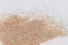

|
|
(For further information on spectroscopy, see:
http://speclab.cr.usgs.gov)
TITLE: Barite HS79 DESCRIPT
DOCUMENTATION_FORMAT: MINERAL
SAMPLE_ID: HS79
MINERAL_TYPE: Sulfate
MINERAL: Barite (Barite group)
FORMULA: BaSO4
FORMULA_HTML: BaSO4
COLLECTION_LOCALITY: Custer County, Colorado
ORIGINAL_DONOR: Hunt and Salisbury Collection
CURRENT_SAMPLE_LOCATION: USGS Denver Spectroscopy Laboratory
ULTIMATE_SAMPLE_LOCATION: USGS Denver Spectroscopy Laboratory
SAMPLE_DESCRIPTION:
Theoretical percentages of the oxides in the formula are BaO 65.7%,
SO3 34.3%. Sr substitutes for Ba and a complete solid solution
series extends to celestite, but most material is near one end or the
other of the series. A small amount of Pb may also substitute for Ba.
Sieve interval 74-250µm.
IMAGE_OF_SAMPLE:

END_SAMPLE_DESCRIPTION.
XRD_ANALYSIS:
40 Kv - 30 mA, 6.5-9.5 keV
File: barit79_mdi, *.out (smear mount on quartz plate)
References: JCPDS #24-1035
Found: Barite
Comment: Observed all listed reflections but the weak reflection at 2.735 Angstroms.
Lattice spacing's consistent with BaSO4 composition. Observed one un indexed
very weak reflection at 4.22 Angstroms. Moderately sharp reflections (the alpha1-alpha2
splitting is not distinct at 40-50 degrees 2 theta) indicate moderate crystallinity.
END_XRD_ANALYSIS.
COMPOSITIONAL_ANALYSIS_TYPE: None # XRF, EM(WDS), ICP(Trace), WChem
COMPOSITION_TRACE: None
COMPOSITION_DISCUSSION:
No compositional analyses.
END_COMPOSITION_DISCUSSION.
MICROSCOPIC_EXAMINATION:
Optical examination gives the following mineral mode:
80 vol% barite
20 vol% pink Fe-stained barite
avg. grain size = 200µm
Rectangular grains some with bundles of limonite? embedded. Others stained by limonite. Heavy sample, biaxial (+), low 2v, all consistent with barite. G. Swayze
END_MICROSCOPIC_EXAMINATION.
SPECTROSCOPIC_DISCUSSION:
END_SPECTROSCOPIC_DISCUSSION.
SPECTRAL_PURITY: 1b2b3b4_ # 1= 0.2-3, 2= 1.5-6, 3= 6-25, 4= 20-150 microns
| LIB_SPECTRA_HED: | where | Wave Range | Av_Rs_Pwr | Comment |
|---|---|---|---|---|
| LIB_SPECTRA: | splib04a r 646 | 0.2-3.0µm | 200 | g.s.= 200 µm |
| LIB_SPECTRA: | splib05a r 1297 | 0.2-3.0µm | 200 | g.s.= |
| LIB_SPECTRA: | splib06a r 3369 | g.s.= | ||
| LIB_SPECTRA: | splib06a r 3380 | g.s.= |
{kind=link}